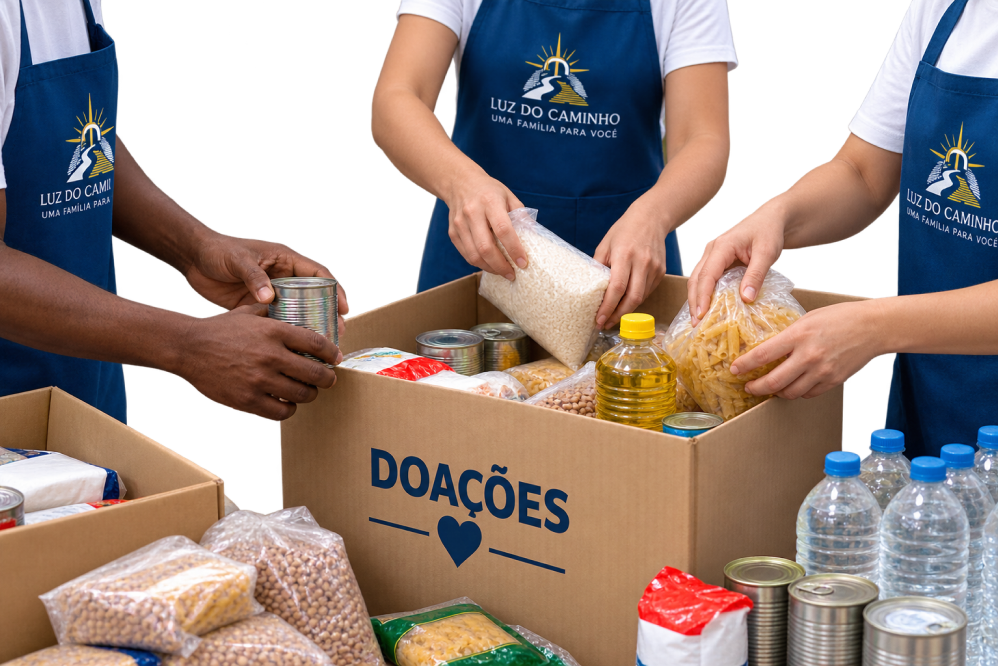
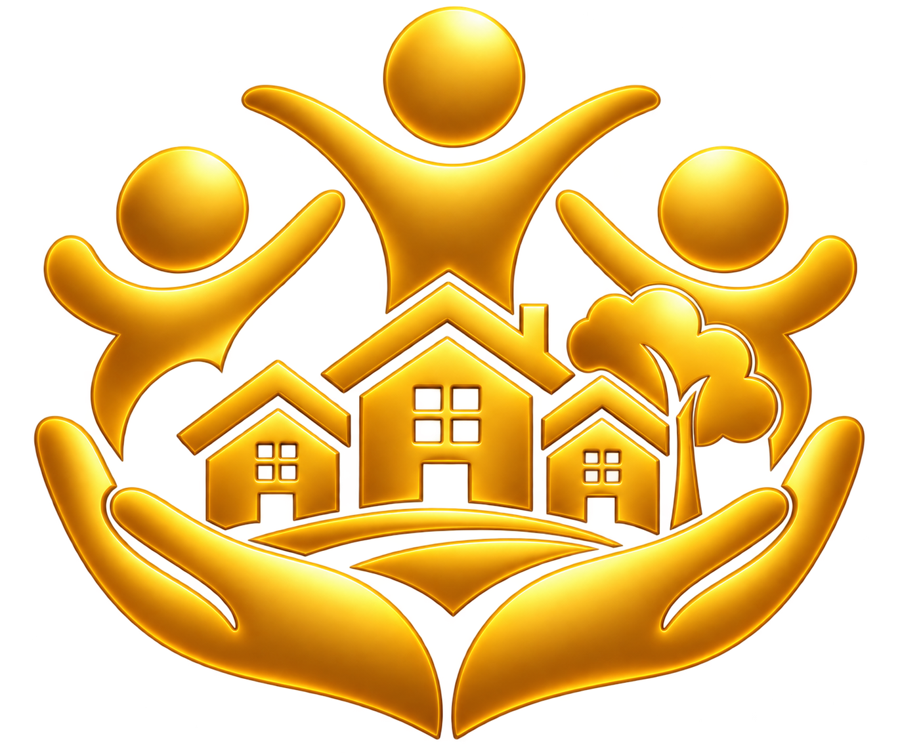

Compartilhando amor, esperança e solidariedade.
A Igreja Luz do Caminho acredita que cuidar do próximo é uma maneira de demonstrar amor, respeito e solidariedade.
Por meio de iniciativas sociais, buscamos incentivar a união, a generosidade e o apoio às pessoas que precisam de ajuda.
Nosso propósito é contribuir para uma comunidade mais acolhedora, justa e solidária.

Conheça algumas iniciativas que podem fazer parte do trabalho social da nossa igreja.
Mobilização para arrecadar alimentos, roupas e outros itens essenciais destinados a pessoas e famílias em situação de necessidade.

Incentivo à escuta, ao acolhimento e ao apoio às pessoas, promovendo respeito, dignidade e fortalecimento dos vínculos comunitários.
Incentivo à participação voluntária em iniciativas que promovam o bem-estar e a solidariedade na comunidade.
Pequenas atitudes podem fazer uma grande diferença. Você também pode contribuir com seu tempo, suas habilidades ou doações para iniciativas solidárias.
Entre em contato com a Igreja Luz do Caminho para conhecer as ações disponíveis e saber como participar.
Entre em Contato